Independent brand campaign concept
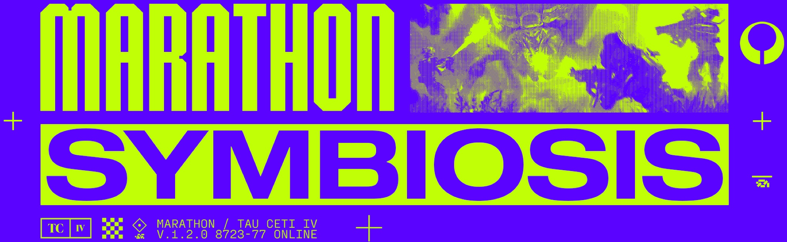
Marathon Symbiosis Brand campaign
A new way into a familiar world. An independent campaign concept that brings new and returning players into Marathon through Symbiosis.
Created as a small class project focused on developing a brand campaign, this work is also a small extension of my larger Marathon UI/UX project. I’ll be working on that larger project next semester with guidance from multiple graphic design and art professionals, professors, and lecturers.
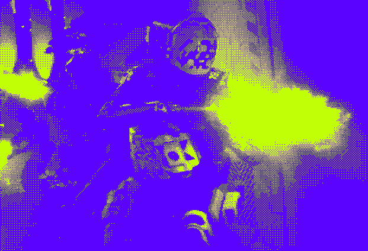
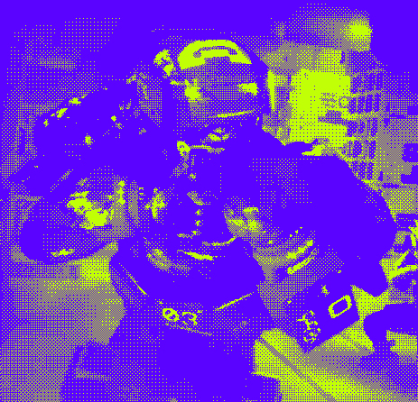
03 / The design
Campaign visual identity
The message carries through every format. Electric purple, lime, oversized type, and Runner imagery connect the campaign from a poster to a platform homepage.
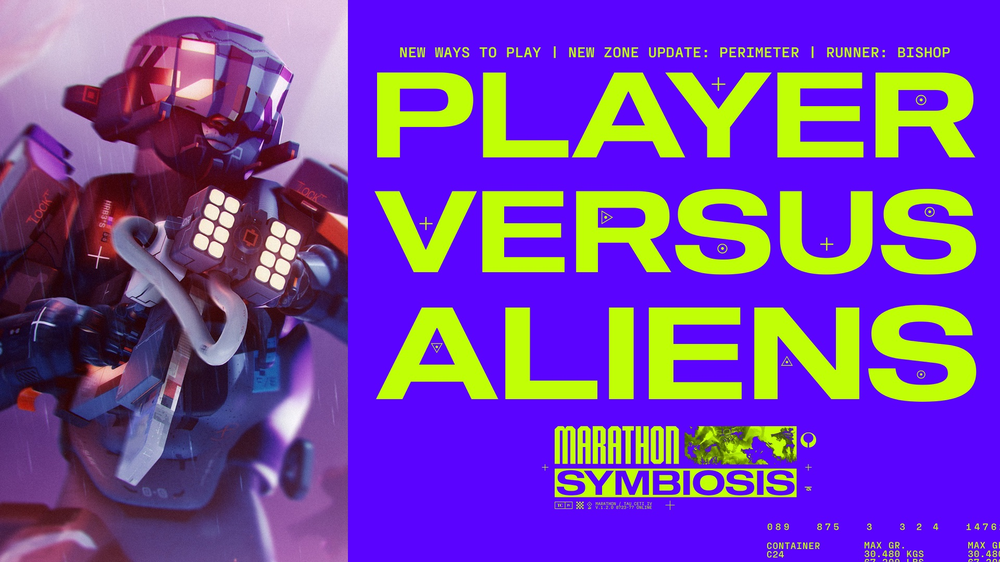
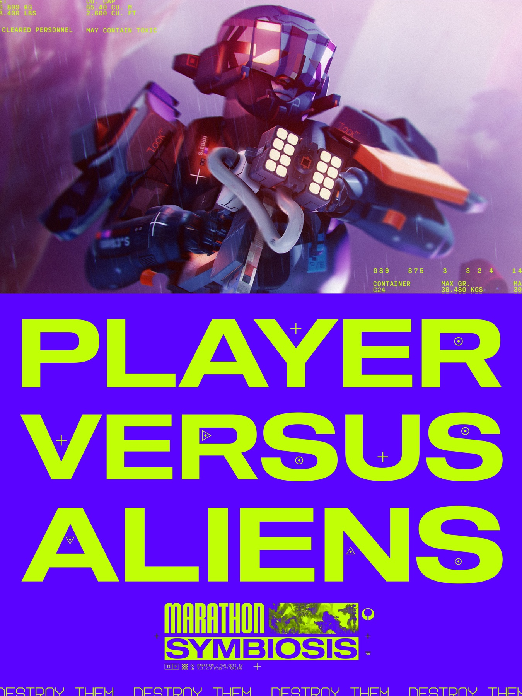
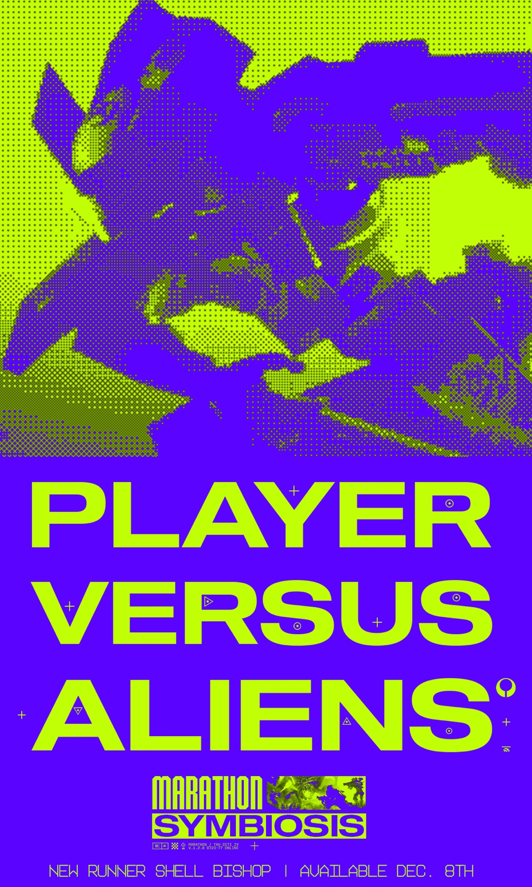
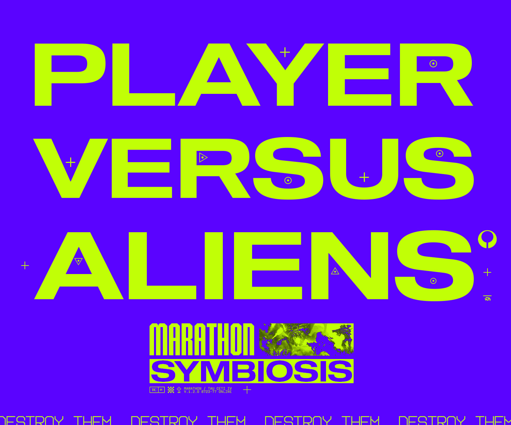
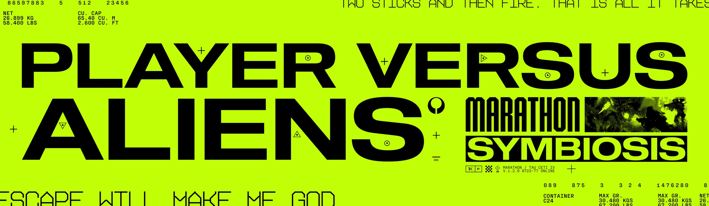
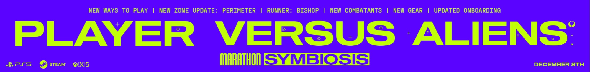
Website mockups
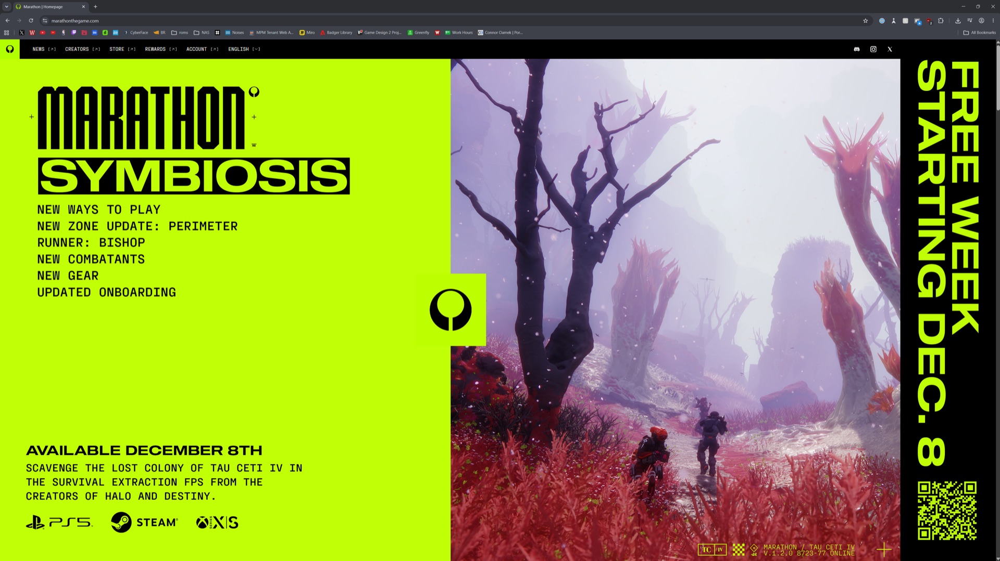
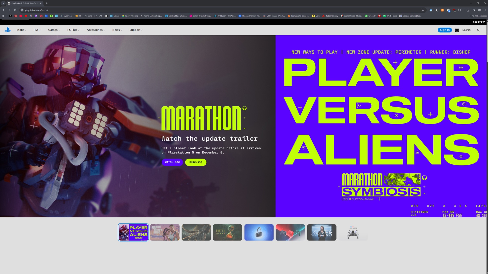
Explore the full project
The presentation
Step through the original research, strategy, and campaign studies.